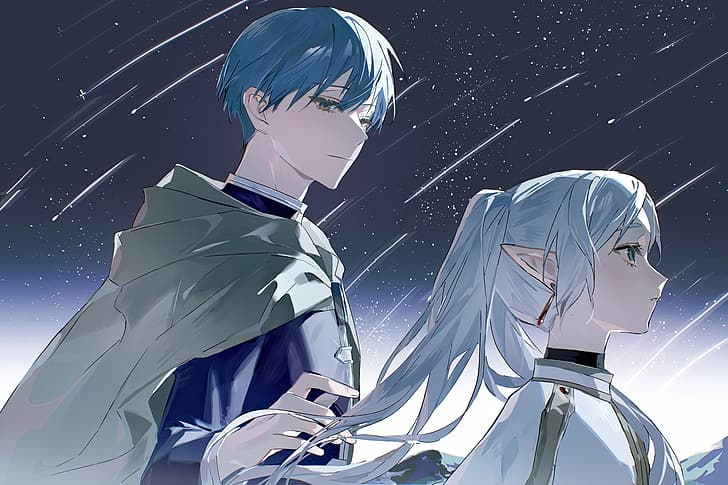

Himmel fue un héroe legendario que formó parte del grupo original de aventureros junto a Frieren. Carismático, valiente y con un corazón generoso, es recordado como un símbolo de esperanza para el pueblo.
Aunque a primera vista parecía un poco vanidoso, su bondad y deseo de ayudar a los demás eran sinceros. Siempre trataba de hacer sonreír a quienes lo rodeaban, especialmente a Frieren, a quien valoraba profundamente.
La muerte de Himmel al comienzo de la serie marca un punto crucial en la historia, motivando a Frieren a reflexionar sobre el tiempo que compartieron y el verdadero valor de las relaciones humanas.
Su legado vive no solo en los recuerdos de sus compañeros, sino también en la inspiración que dejó en muchos otros, incluyendo a la nueva generación de héroes.